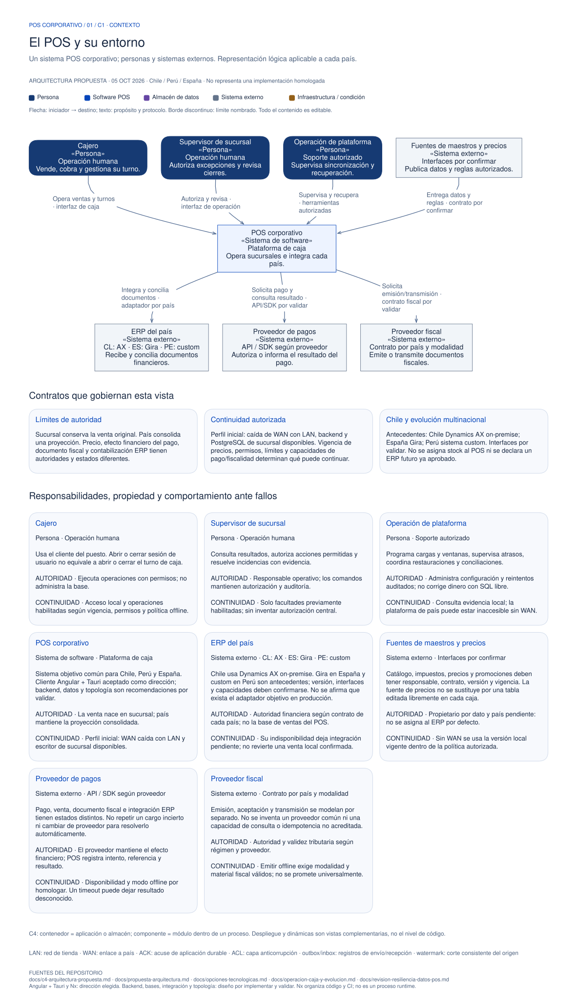
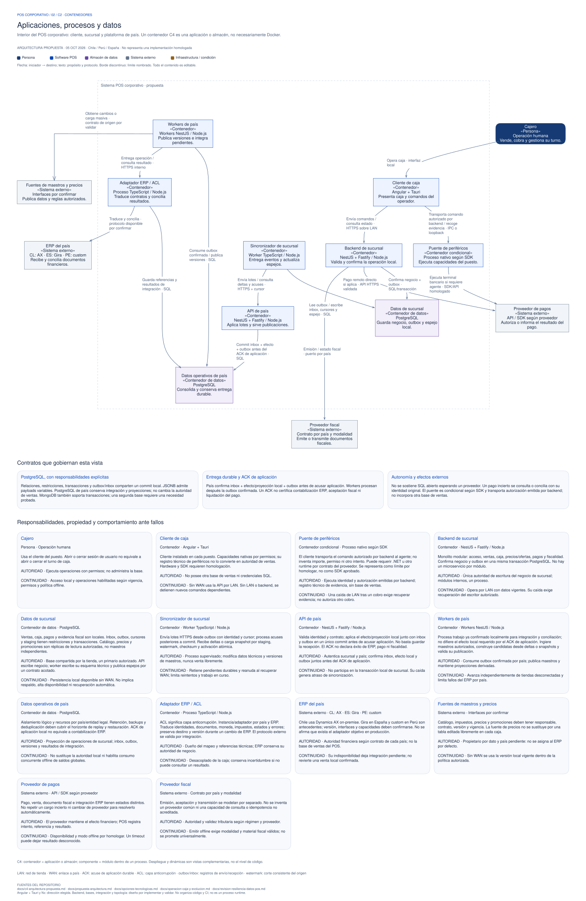
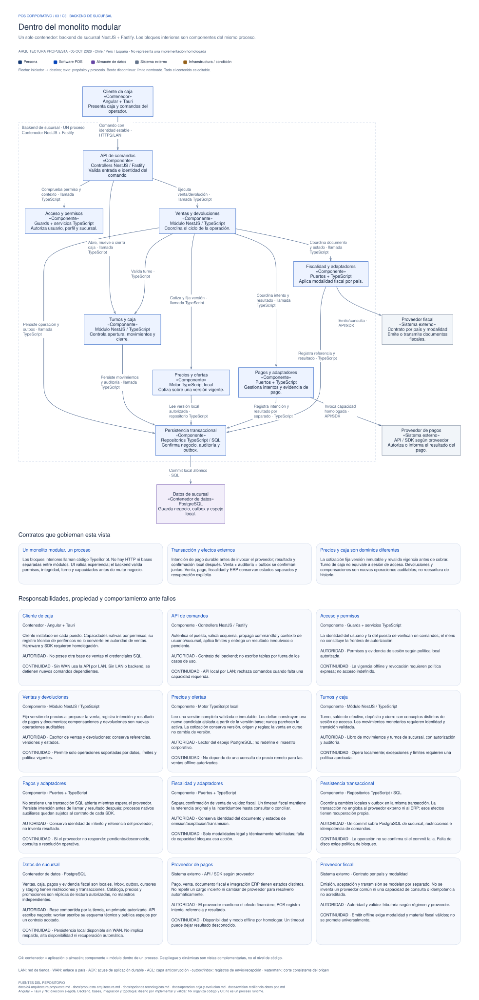
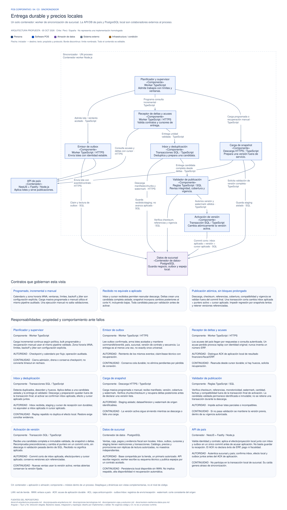
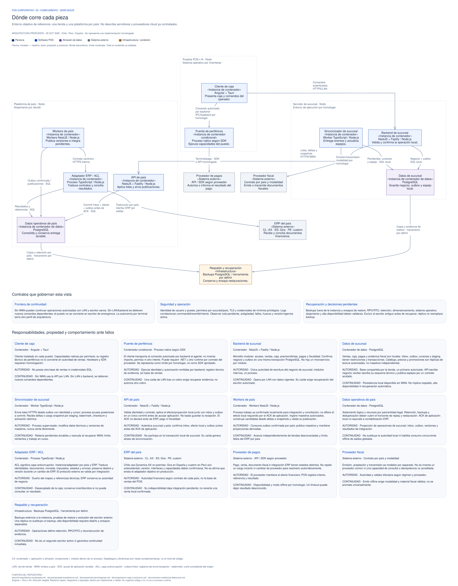
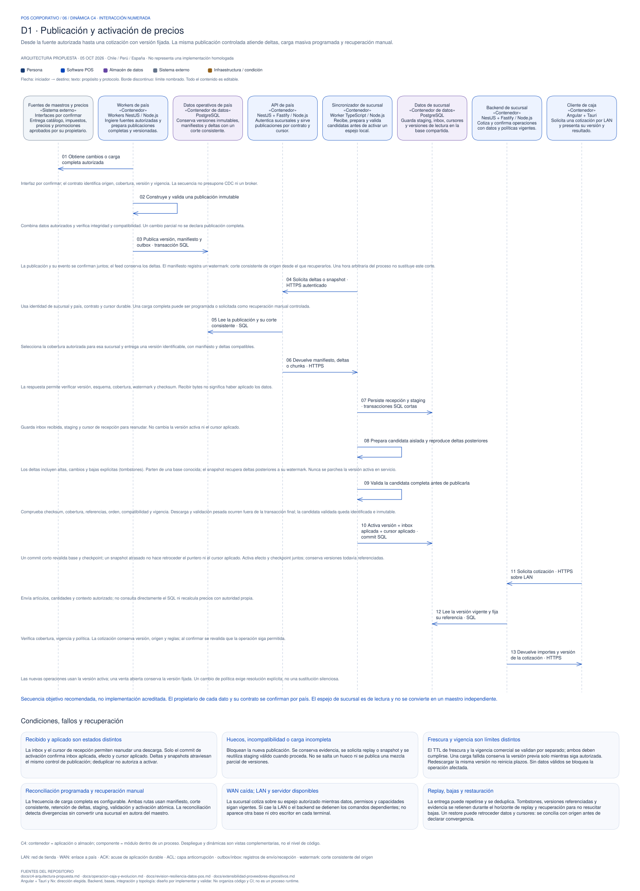
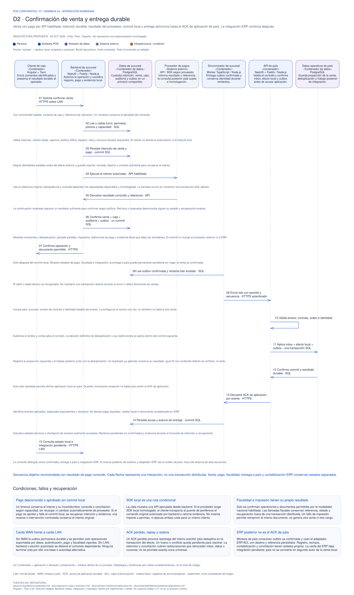

C1 · Contexto
El POS y su entorno
Personas, sistemas externos y límites de responsabilidad. Distingue maestros y precios, ERP, pagos y fiscalidad.

Arquitectura propuesta / Colección editable
Siete diagramas para recorrer la propuesta del POS: cinco vistas estructurales y dos dinámicas. Cada archivo de Excalidraw permite editar formas, textos y relaciones; el SVG permite consultar la vista completa.
Esta galería y sus SVG funcionan con archivos locales, sin dependencias externas. Conserva los archivos juntos al extraer el ZIP.
Las vistas previas mantienen el tamaño del dibujo: desplázate dentro de ellas para leerlo o abre el SVG completo. Puedes enfocar una vista con el teclado y usar las flechas para desplazarla.
Del sistema y su entorno a los procesos que operan en cada sucursal.
C1 · Contexto
Personas, sistemas externos y límites de responsabilidad. Distingue maestros y precios, ERP, pagos y fiscalidad.

C2 · Contenedores
Cliente Angular + Tauri, backend y PostgreSQL de sucursal, sincronizador y plataforma de país. Un contenedor C4 representa una aplicación o almacén de datos.

C3 · Componentes del backend
Acceso, ventas, precios, caja, pagos, fiscalidad y persistencia dentro de un único proceso NestJS + Fastify.

C3 · Componentes del sincronizador
Planificación, envío, recepción, deduplicación, preparación y validación de candidatas antes de su activación atómica.

Complemento C4 · Despliegue
Distribución de instancias, conectividad LAN/WAN y recuperación. La topología definitiva y sus objetivos operativos requieren validación.

Dos recorridos numerados explican cómo colaboran las piezas y qué ocurre ante fallos.
Dinámica C4 · Precios
Descarga recuperable, snapshot y deltas, validación de una candidata completa y cambio de versión. Las ventas iniciadas mantienen su versión fijada.

Dinámica C4 · Venta
Comando autorizado, precio local, intención y resultado de pago, confirmación de venta y sincronización. Pago, fiscalidad e integración ERP mantienen estados diferenciados.
